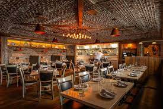
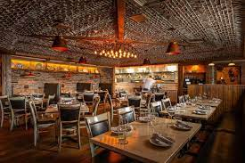

Lou Malnati's Pizza
What's a trip to the Chicagoland area without deep dish pizza? If visiting the north shore suburbs of Chicago, Lou Malnati's pizza is a must. Lou Malnati started working in Chicago's first deep dish pizzeria in the 1940s. He then opened the first Lou Malnati Pizzeria with his wife in Lincolnwood, IL on March 17, 1971. Every Lou Malnati's Pizza is handmade from scratch, using California vine-ripened tomatoes. Lou Malnati's mozarella has been supplied from the same dairy farms for the past 40 years. Known for its deep dish crust, Lou Malnati's secret crust recipe has been passed down from generation to generation.
Visit Lou Malnati's WebsiteBlufish Sushi Bistro
Upscale Japanese cousine with both an an a la carte menu and sushi menu. Located at: 2709 Pfingsten Rd. Glenview, IL 60026.


Guildhall
American bistro that also offers a sushi menu, craft cocktails, and wine list. Open for lunch and dinner, and brunch on the weekends. Located at: 694 Vernon Ave. Glencoe, IL


Disotto
Small plate Italian food and wine in a cellar-like setting. Located at: 200 E Chestnut St, Chicago, IL 60611
 

Acai Bowls
LF Juice
A popular juice bar offering juices, smoothies, acai bowls, and other health foods. Located at: 647 Bank Ln Lake Forest, IL 60045.

Lolo's Bowls
Soft Serve Acai bowls and smoothies Located at: 854 S Milwaukee Ave Libertyville IL 60048

Bright Bowls
Smoothie bowls known for their bright, colorful aesthetic. Located at: 777 Central Ave, Highland Park, IL 60035
Hampton Social
Coastal inspired food, cocktails, and music in a Hamptons modeled environment. Offering: signature "Rose All Day" lounge, bar, outdoor seating, dining room, and private dining room. Located at: 4999 Old Orchard Shopping Center, Skokie, IL 60077
Spirit Elephant
The first fully plant-based restaurant and bar on Chicago's North Shore. Vegan friendly. Located at: 924 Green Bay Rd, Winnetka, IL 60093
Deer Path Inn
Dining options at the historic Deer Path Inn include: the elegantly set English Room, Afternoon Tea, and the White Hart Pub. Located at: 255 E Illinois Rd, Lake Forest, IL 60045


Hometown
Known for their toasts, sandwhiches, bagel melts, salads & pockets, smoothies, and coffee. Happy hour drinks available. Locaed at: 700 Vernon Ave, Glencoe, IL 60022 and 749 Elm Street Winnetka, IL 60093
Foodstuffs
Gourmet foods and catering specializing in quality prepared foods, soups, create-your-own salads, custom-made sandwhiches, breads, and pastries. Located at: 338 Park Ave, Glencoe, IL 60022 & 1454 Waukegan Rd, Glenview, IL 60025 & 255 E Westminster Ave, Lake Forest, IL 60045